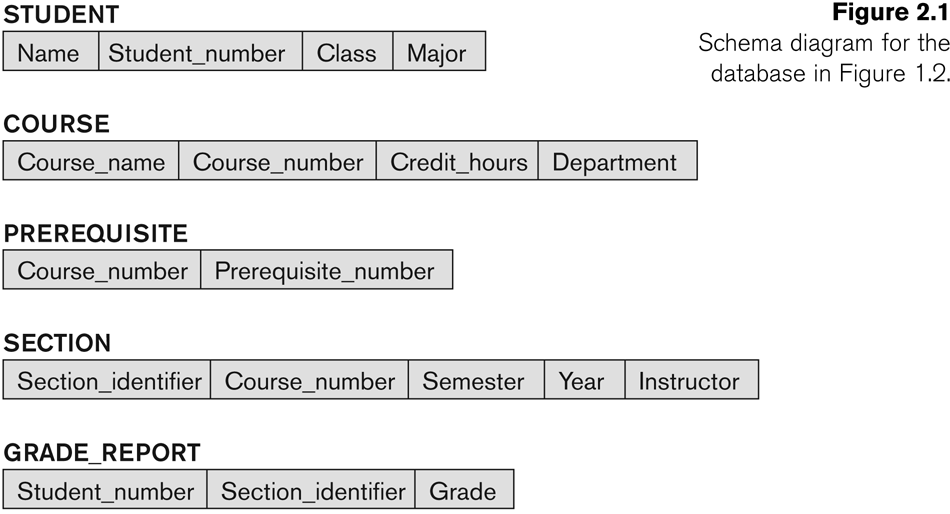

Database Management Systems
Schemas, Architecture & Data Independence
Designation: Assistant Professor, School of Computer Science
Institution: UPES, Dehradun
Target Audience: MT-CSE-I Database Systems
Schemas, Instances, and States
Schema: The logical structure and design of the database - it's like a blueprint that defines tables, columns, data types, and relationships.
Instance: The actual data stored in the database at any particular moment in time.
Database State: The collection of all instances of all relations in a database at a particular point in time.
🔍 Additional Important Concepts
Schema Construct: A component of the schema or an object within the schema, e.g., STUDENT, COURSE.
Initial Database State: Refers to the database state when it is initially loaded into the system.
Valid State: A state that satisfies the structure and constraints of the database.
Alternative Terminology:
• Schema is also called intension
• State is also called extension
🏗️ Database Schema
Structure and organization - remains stable
📊 Database State

Actual data content - changes frequently
-- Schema Definition (DDL)
CREATE TABLE Student (
StudentID INT PRIMARY KEY,
Name VARCHAR(50) NOT NULL,
Age INT CHECK (Age > 0),
Grade DECIMAL(3,2)
);
Three-Schema Architecture
A framework that separates the user applications from the physical database through three levels of abstraction.
Purpose: Individual user views
Components: User-specific schemas, customized views
Example: Student Portal View, Faculty Dashboard
Purpose: Community view of entire database
Components: All entities, relationships, constraints
Example: Complete university database schema
Purpose: Physical storage and access methods
Components: Storage structures, indexes, access paths
Example: B+ tree indexes, file organization
-- External Schema (Student View) CREATE VIEW StudentGrades AS SELECT Name, CourseName, Grade FROM Student S, Enrollment E, Course C WHERE S.StudentID = E.StudentID AND E.CourseID = C.CourseID; -- Conceptual Schema (Complete Logical Design) CREATE TABLE Student (...); CREATE TABLE Course (...); CREATE TABLE Enrollment (...); -- All relationships and constraints -- Internal Schema (Physical Implementation) -- Index on StudentID for faster lookups CREATE INDEX idx_student_id ON Student(StudentID); -- Clustered storage for related records

Data Independence
Data Independence is the ability to change the schema at one level without affecting the schema at the next higher level.
🎯 Logical Data Independence
Definition: Ability to change conceptual schema without affecting external schemas
Examples:
- Adding new tables
- Adding new attributes
- Changing relationships
💾 Physical Data Independence
Definition: Ability to change internal schema without affecting conceptual schema
Examples:
- Changing storage structures
- Adding/removing indexes
- Changing file organization